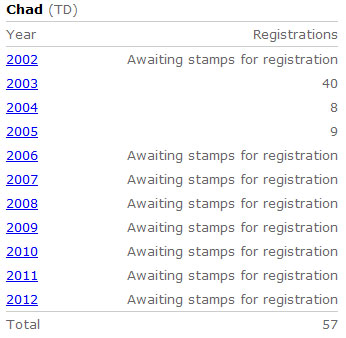
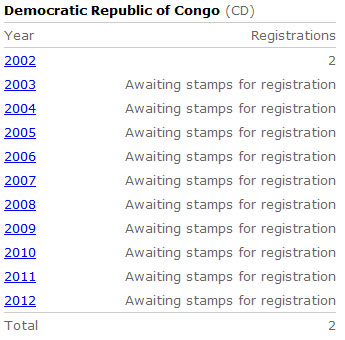
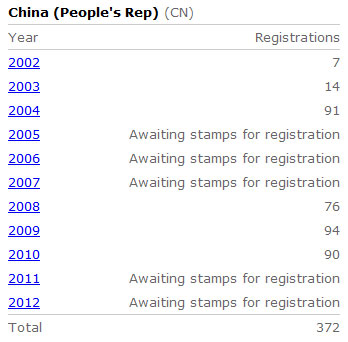
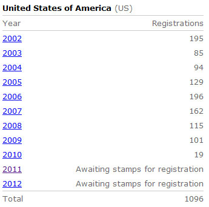

Ten Lost WNS Years
THE TEN LOST WNS YEARS
As we have mentioned in a previous article, the WNS (WADP Numbering System) was created by the World Association for the Development of Philately (WADP) and implemented by the Universal Postal Union (UPU). The WNS website was launched on January 1, 2002. The new numbering system was supposed to be the foundation for an online database of all stamps lawfully issued worldwide, starting by 1/1/2002, and its goal was to fight against the large-scale manufacture and sale of illegal stamps.
The WNS put on its site the following statement:
"The WNS website is therefore a reference tool and a control, by omission, of stamps that have been issued illegally and labels that are claimed to be stamps. The WNS is one of the tools the UPU has introduced, helping the Posts and the philatelic market as a whole to combat this problem." Source
The time came, ten years later, for looking back at the results and, if this is the case, for the celebration of the accomplished work. One can wonder why nothing in what concerns this 10 years anniversary is mentioned on the WNS site itself. This article will try to bring its contribution to the explanation of why we see no fireworks on the WNS site.
The results of the WNS can be learned from the WNS summarizing page .
Let's take together a closer look at this report, which is permanently updated by the WNS, and then let's draw the resulting conclusions.


The above excerpts, taken from the mentioned WNS page, inform us about the status of registration of issued stamps for two of the countries that are known victims of illegal stamps issues, Chad and the Democratic Republic of Congo. It says that the stamps issuing status for Chad is unknown to the WNS team since 2006 and for DRC even since 2003. Unfortunately, these countries are no exception, so many other countries being in the similar situations (like Anguilla, Benin, Comoros, Cote d'Ivoire, Gabon, Haiti, Lesotho, Mali, etc.).


It is interesting to note that two big countries, the PR of China and the United States of America, have slowed down their support for the WNS, as is can be learned from the above tables. From 10 passed years, the PRC registered it stamps for 6 years only. Actually, this is not important because anyway there aren't illegal stamps issued in the name of PRC or USA .
Because the database has so many gaps in the registration of worldwide stamps, the philatelic team of the International Bureau (IB) of the UPU is not able to provide help to stamp collectors in the identification of illegal issues, a fact which we have shown in our article ‘The “Expertize” of the UPU Experts in Illegal Stamps'.
In the past the stamp collectors could at least make use of the UPU IB Circulars, which denounced the identified illegal stamps. Not only that the number of Circulars diminished drastically in the last years but their quality too. As an example, in January 2012 the UPU published on its site only two Circulars, which actually refer to the year 2011. Source. In one of them, that from Uganda , there is no reference to which stamps were actually denounced. In that of Tanzania , for the first time in the quite long history of Circulars, "Samples of these illegal stamps are attached." Just to remind that from the very beginning the UPU IB banned the publication of the images of illegal stamps, an interdiction that it violates now. Of course the mentioned shortcomings are not the faults of both postal administration but of the UPU IB philatelic team, which coordinates (but obviously doesn't anymore) this entire activity.
Because of the obvious shortcomings of the WNS, and the drastic reduction in the number and in the seriousness of the UPU Circulars, our PWO can provide just a limited assistance, one based on previous UPU Circulars. This aid is intended both for stamp collectors and, for example, for a big stamps auction site on the Web that asked for our support for removing the illegal stamps offers. This support has become necessary because the number and the variety of illegal stamps that are offered on the market never have been as large as they are today. The reality contradicts the bragging on itself of the UPU IB philatelic team, who uses comparative figures taken from nowhere, a fact that it asserts by itself (Source: the e-mail of Mr. J.-F. Logette, UPU Philately Expert, to the PWO).
We were informed that the UPU IB philatelic team will undergo changes toward the end of this year. In addition, the countdown to the 25th UPU Congress in Doha (24 Sept. - 15. Oct) has already begun and we can hope that some changes in the illegal stamps policy of the UPU will be decided there too. Even if these changes could have some negative consequences, like ones that could affect the team which is working since 2002 for developing and updating the WNS database (by the way, says the Web, in the "Australia's favourite and wonderful vacations" island of Tasmania), the time has come for the IB philatelic team for doing something useful and not just things that sound good, calm bad consciences, cost millions of Swiss Francs but which have not reached their main goal, the massive reduction of illegal stamps issues.
|